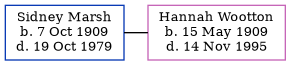

Sidney Thomas Marsh 1909 - 1979
[ Home ] | [ Calendar ] | [ Surnames Index ] | [ Family History ]Sidney Marsh was born in Patrixbourne, Kent, England on Oct 7, 19091,2,3,4 and baptized there at St Mary on Dec 19, 1909. He married Hannah Wootton in Minster, Thanet, Kent, England on Dec 10, 19326.
Throughout his life, he lived at his birthplace on Apr 2, 19111; and at 61 Chestnut Copse, Oxted, Surrey, England in 1979.
He died on Oct 19, 1979 in Surrey3,5.
Citations
- 1911 England Census Online publication - Provo, UT, USA: Ancestry.com Operations, Inc., 2011.Original data - Census Returns of England and Wales, 1911. Kew, Surrey, England: The National Archives of the UK (TNA), 1911. Data imaged from the National Archives, London, England. (Age: 1; Relation to Head of House: Son)
- England & Wales deaths 1837-2007 - Findmypast
- England & Wales, Death Index: 1984-2005 Online publication - Provo, UT, USA: The Generations Network, Inc., 2007.Original data - General Register Office. England and Wales Civil Registration Indexes. London, England: General Register Office. © Crown copyright. Published by permission of the Cont
- England & Wales, FreeBMD Birth Index, 1837-1915 Online publication - Provo, UT, USA: The Generations Network, Inc., 2006.Original data - General Register Office. England and Wales Civil Registration Indexes. London, England: General Register Office. © Crown copyright. Published by permission of the Cont
- England & Wales Government Probate Death Index 1858-2019 - Findmypast
- England & Wales, Marriage Index: 1916-2005 Online publication - Provo, UT, USA: The Generations Network, Inc., 2009.Original data - General Register Office. England and Wales Civil Registration Indexes. London, England: General Register Office. © Crown copyright. Published by permission of the Cont
Media
England & Wales marriages 1837-2008 - BMD/M/1932/4/AZ/000777/009
England & Wales births 1837-2006 - BMD/B/1909/4/AZ/000366/146
England & Wales deaths 1837-2007 - BMD/D/1979/4/AZ/000739/056
Kent Baptisms - GBPRS/CANT/B/96528452
England & Wales Government Probate Death Index 1858-2019 - GBOR/GOVPROBATE/C/1980-1980/00148651
Family Tree
Generated by ged2site. Last updated on Nov 13, 2024